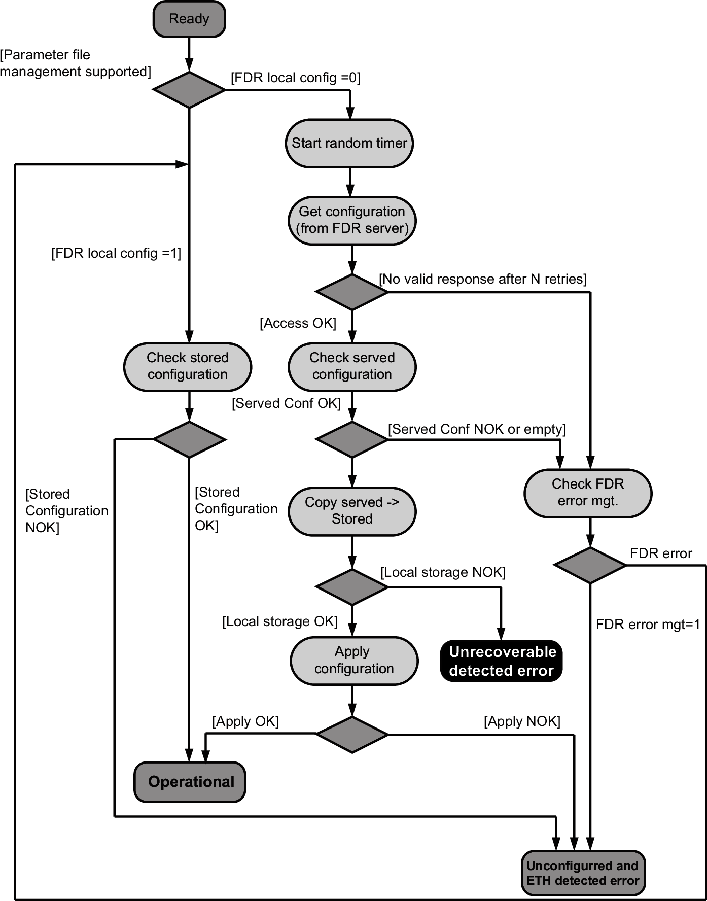
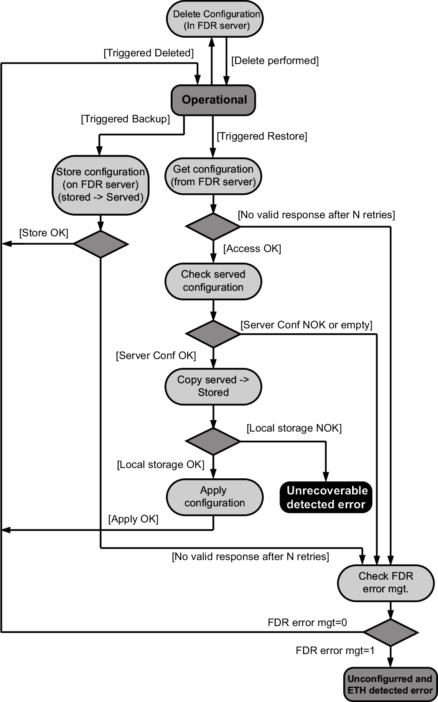
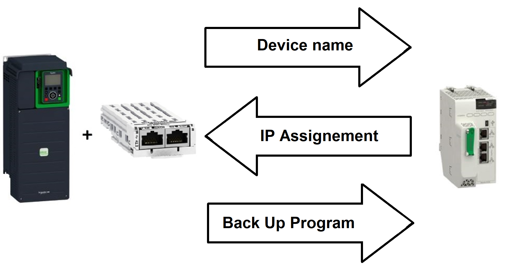
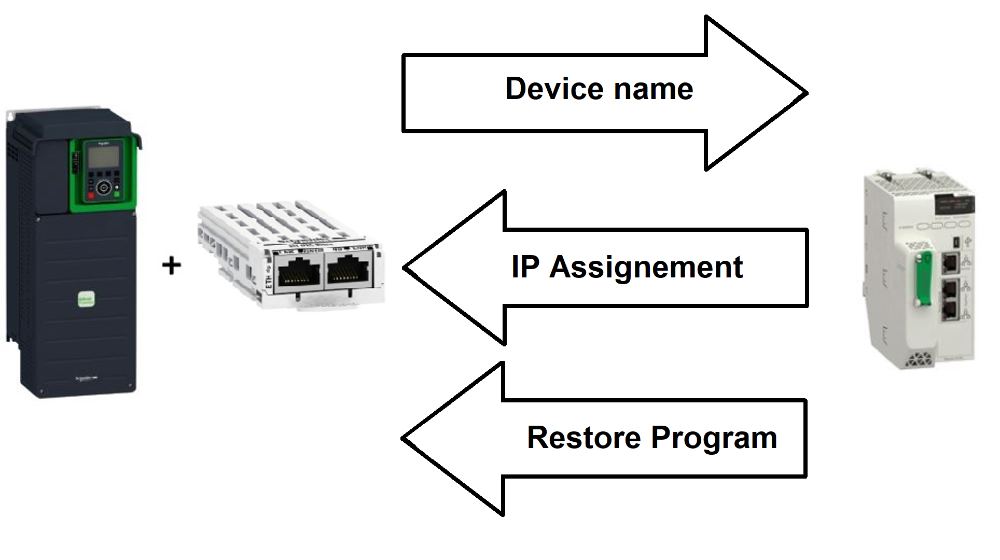

The Fast Device Replacement (FDR) service makes it easier to maintain drives and ATV dPAC controllers on an Ethernet network. If a drive or ATV dPAC needs to be replaced, this service automatically sets up the new device.
The new ATV dPAC (FDR client) retrieves:
Its IP addresses and the FDR file path from a DHCP server.
The FDR file from an FTP server if the ATV dPAC is not configured in local configuration.
In practice, the DHCP server and the FTP server are the same device (EcoStruxure Control Expert M580 or M340, EcoStruxure Machine Expert M262 or dedicated PCs).
The FDR file contains:
The ATV dPAC application (boot project, IEC61499 logic, configuration, persistent data ...etc.)
The Ethernet parameters (configuration of I/O scanning, FDR ...etc.)
The drive parameters (drive , functions, application ...etc.)
The FDR service is based on identification of the device by a . In the case of the ATV dPAC, this is represented by the [Device Name] PAN[DEVICE NAME](PAn) parameter.
The configuration of the FDR service is accessible via the Graphic Display Terminal or the embedded webserver.
The FDR server controls duplication of (it does not assign an IP address that has already been assigned and is active).
If the same IP address is supplied on 2 devices, a[External Error] EPF1 or a [Fieldbus Error] EPF2 will be triggered.
If the FDR service has been enabled, the Ethernet adapter attempts to restore its IP addresses on each power-up. Each time the procedure has detected error, the Ethernet adapter reiterates its FDR requests (DHCP).
After assigning the Ethernet adapter IP addresses, if the configuration is not downloaded successfully, the Ethernet embedded triggers a [FDR 1 Error] FDR1, while the Ethernet adapter (option card) triggers a [FDR 2 Error] FDR2



If the ATV dPAC parameter configuration is local, the FDR server only assigns the following IP addresses:
IP address.
Subnet mask.
Gateway IP address.
On connection to the network, the ATV dPAC automatically saves its application in the FDR server.
|
Step |
Action |
Description |
|---|---|---|
|
1 |
Configure the FDR server |
Refer to the PLC manual or the Fast Device Replacement section in EcoStruxure software. |
|
2 |
Configure the ATV dPAC |
In the [Communication] (COM-), [Comm parameters] (CMP-) menu, [Eth Module Config] (EtO-) submenu:
|
|
3 |
Turn off the drive |
Turn off the ATV dPAC and then back on again (control voltage supply if a separate power supply is being used), otherwise the device name is not taken into account. |
|
4 |
Connect the drive to the network |
Connect the ATV dPAC and the FDR server (PLC) to the Ethernet network. |

If the ATV dPAC application has been downloaded, the FDR server assigns the following addresses:
IP address,
Subnet mask,
Gateway IP address,
FDR server IP address.
The FDR service is able to store the current configuration of the drive, but does not provide the possibility to store multi-parameters configurations.
In the procedure described below, the ATV dPAC application file is transferred to the FDR server, via the Ethernet network, using a manual save command.
|
Step |
Action |
Description |
|---|---|---|
|
1 |
Configure the ATV dPAC |
In the [Communication] (COM-), [Comm parameters] (CMP-) menu, [Eth Module Config] (EtO-) submenu:
|
|
2 |
Turn off the drive |
Turn off the drive and then back on again (control voltage if a separate power supply is being used), otherwise the device name is not taken into account |
|
3 |
Connect the ATV dPAC to the fieldbus |
Connect the ATV dPAC and the FDR server (PLC) to the Ethernet fieldbus. |
|
4 |
Configure the FDR server (see the PLC manual) |
The server downloads the IP addresses to the Ethernet adapter.
Check that the operation has proceeded correctly: you can also check, in the [Communication]
Whether the [IP address] |
|
5 |
Create boot project |
Deploy your EcoStruxure Automation Expert application to the ATV dPAC, then create a boot project. |
|
6 |
Supply the FDR server with the ATV dPAC application file |
Send a save command to the FDR server using the Graphic Display Terminal or embedded webserver. |
|
7 |
Check that the system is operational |
If the save operation has not been successful, the adapter detects a communication error which, in factory settings mode, triggers a [FDR 2 Error] |
For replacing an ATV dPAC, it is necessary to follow the procedure below:
|
Step |
Action |
Action |
|---|---|---|
|
1 |
Configure the ATV dPAC |
In the [Communication] (COM-), [Comm parameters] (CMP-) menu, [Eth Module Config] (EtO-) submenu.
|
|
2 |
Turn off the drive |
Turn off the drive and then back on again (control voltage if a separate power supply is being used), otherwise the device name is not taken into account |
|
3 |
Connect the ATV dPAC to the fieldbus. |
Connect the ATV dPAC and the FDR server (PLC) to the Ethernet fieldbus. |
|
4 |
Check that the ATV dPAC is operational. |
Check that the operation has proceeded correctly.
If downloading has not been possible after a period of 2 min following assignment of the IP addresses, the adapter detects a communication error which, in factory settings mode, triggers an [FDR 2 Error] |